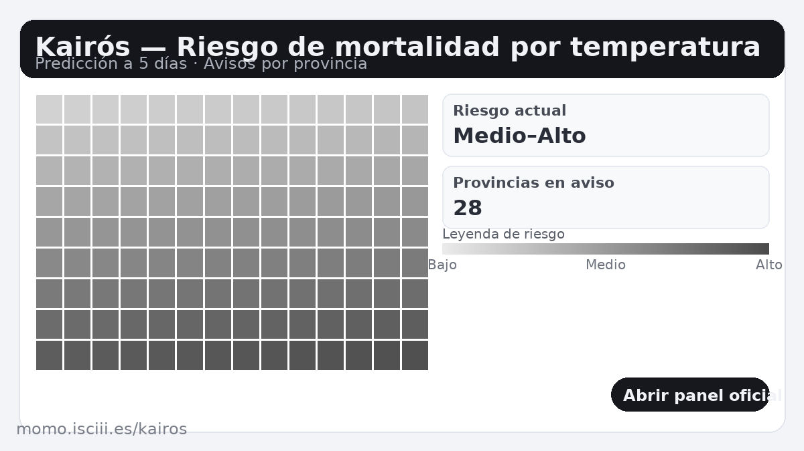
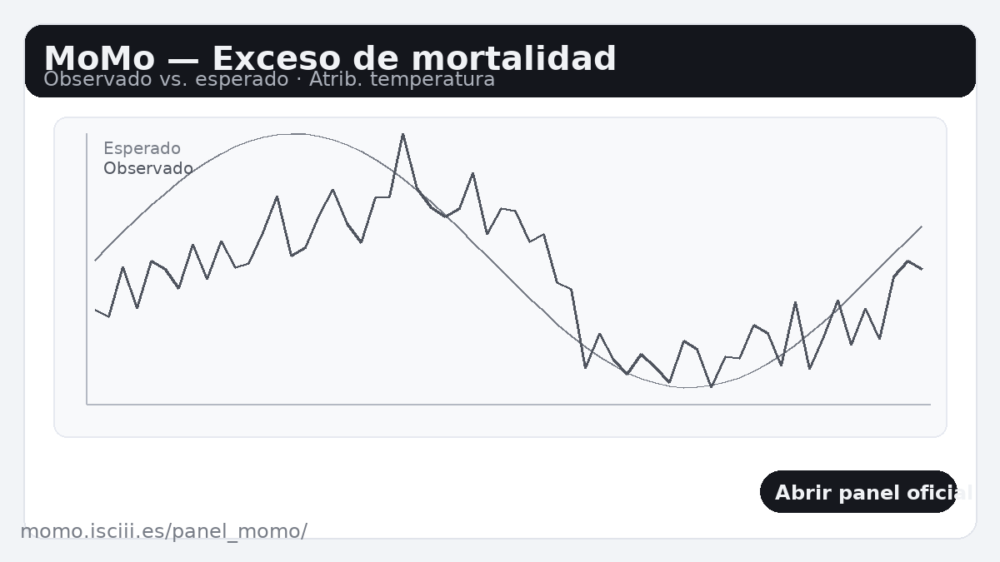

Olas de calor y mortalidad
El incremento en frecuencia, duración e intensidad de las olas de calor aumenta ingresos hospitalarios y muertes. Los planes de prevención (alertas, sombra, hidratación, refugios climáticos) reducen el riesgo.
El cambio climático ya está afectando a la salud: aumenta la mortalidad por olas de calor, empeora la calidad del aire (ozono, PM2.5 por incendios) y favorece la expansión de vectores (mosquitos y garrapatas), además de dañar la salud mental tras eventos extremos. Esta página reúne indicadores clave y fuentes científicas para usar en divulgación.
El incremento en frecuencia, duración e intensidad de las olas de calor aumenta ingresos hospitalarios y muertes. Los planes de prevención (alertas, sombra, hidratación, refugios climáticos) reducen el riesgo.
Tormentas, inundaciones e incendios causan lesiones, pérdidas humanas y traumas. También generan desplazamientos y desabastecimientos temporales de agua y fármacos.
El aumento de incendios y del ozono troposférico agrava patologías respiratorias y cardiovasculares. La reducción de emisiones aporta co-beneficios sanitarios inmediatos.
El cambio en idoneidad climática favorece la transmisión de dengue, chikungunya, malaria o fiebre del Nilo, además de enfermedades por garrapatas (Lyme).
Sequías e inundaciones impactan seguridad hídrica y alimentaria, elevando riesgos de malnutrición y enfermedades de transmisión hídrica.
Estrés, ansiedad climática y trastornos postraumáticos tras desastres. Las redes comunitarias y planes de emergencia disminuyen la carga psicológica.
Usamos como referencia los dos sistemas oficiales en España, desarrollados por el Centro Nacional de Epidemiología (ISCIII) y enmarcados en el Plan del Ministerio de Sanidad: Índice Kairós (riesgo de mortalidad atribuible a temperatura, con predicción a 5 días) y MoMo (estimación de exceso de mortalidad diaria por todas las causas y atribuible a temperatura).
Implementación web: cada tarjeta usa una ilustración estática en assets/img/ a modo de botón que abre el panel oficial en una pestaña nueva.


https://momo.isciii.es/kairos/https://momo.isciii.es/panel_momo/Nota: Mantener esta sección sincronizada con las fuentes reales usadas. Si se prefiere, sustituir las URL por enlaces clicables.